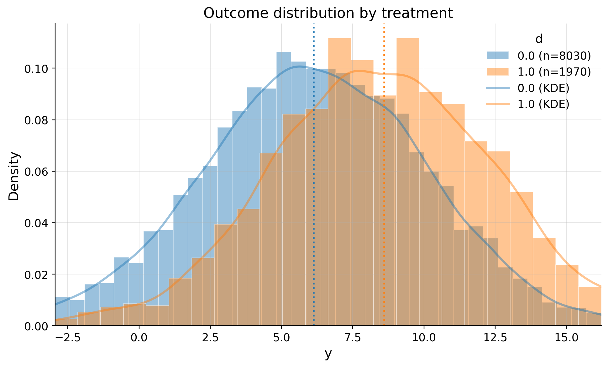
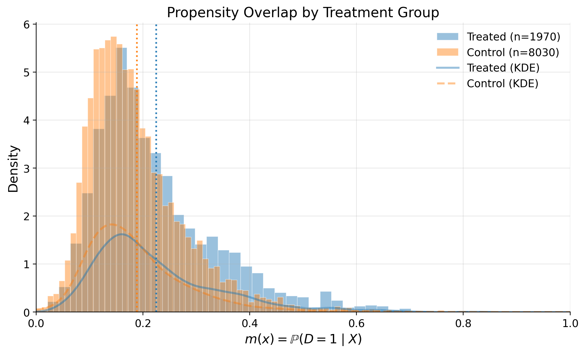

DML ATE Example#
This notebook covers scenario:
Is RCT |
Treatment |
Outcome |
EDA |
Estimands |
Refutation |
|---|---|---|---|---|---|
Observational |
Binary |
Continuous |
Yes |
ATE |
Yes |
We will estimate Average Treatment Effect (ATE) of binary treatment on continuous outcome. It shows explonatary data analysis and refutation tests
Generate data#
Let’s generate data of how feature (Treatment) impact on ARPU (Outcome) with linear effect (theta) = 1.8
import numpy as np
import pandas as pd
import matplotlib.pyplot as plt
from causalis.data import CausalDatasetGenerator, CausalData
# Reproducibility
np.random.seed(42)
confounder_specs = [
{"name": "tenure_months", "dist": "normal", "mu": 24, "sd": 12},
{"name": "avg_sessions_week", "dist": "normal", "mu": 5, "sd": 2},
{"name": "spend_last_month", "dist": "uniform", "a": 0, "b": 200},
{"name": "premium_user", "dist": "bernoulli", "p": 0.25},
{"name": "urban_resident", "dist": "bernoulli", "p": 0.60},
]
# Causal effect and noise
theta = 1.8 # ATE: +1.8 ARPU units if new_feature = 1
sigma_y = 3.5 # ARPU noise std
target_d_rate = 0.2 # ~20% treated
# Effects of confounders on ARPU (baseline, additive)
# Order: tenure_months, avg_sessions_week, spend_last_month, premium_user, urban_resident
beta_y = np.array([
0.05, # tenure_months: small positive effect
0.40, # avg_sessions_week: strong positive effect
0.02, # spend_last_month: recent spend correlates with ARPU
2.00, # premium_user: premium users have higher ARPU
1.00, # urban_resident: urban users slightly higher ARPU
], dtype=float)
# Effects of confounders on treatment assignment (log-odds scale)
beta_d = np.array([
0.015, # tenure_months
0.10, # avg_sessions_week
0.002, # spend_last_month
0.75, # premium_user
0.30, # urban_resident: more likely to get the feature
], dtype=float)
gen = CausalDatasetGenerator(
theta=theta,
outcome_type="continuous",
sigma_y=sigma_y,
target_d_rate=target_d_rate,
seed=42,
confounder_specs=confounder_specs,
beta_y=beta_y,
beta_d=beta_d,
)
# Create dataset
causal_data = gen.to_causal_data(
n=10_000,
confounders = [
"tenure_months",
"avg_sessions_week",
"spend_last_month",
"premium_user",
"urban_resident",
]
)
# Show first few rows
causal_data.df.head()
| y | d | tenure_months | avg_sessions_week | spend_last_month | premium_user | urban_resident | |
|---|---|---|---|---|---|---|---|
| 0 | 4.127714 | 0.0 | 27.656605 | 5.352554 | 72.552568 | 1.0 | 0.0 |
| 1 | 11.122008 | 1.0 | 11.520191 | 6.798247 | 188.481287 | 1.0 | 0.0 |
| 2 | 10.580393 | 1.0 | 33.005414 | 2.055459 | 51.040440 | 0.0 | 1.0 |
| 3 | 6.982844 | 1.0 | 35.286777 | 4.429404 | 166.992239 | 0.0 | 1.0 |
| 4 | 10.899381 | 0.0 | 0.587578 | 6.658307 | 179.371126 | 0.0 | 0.0 |
EDA#
from causalis.eda import CausalEDA
eda = CausalEDA(causal_data)
# shape of data
eda.data_shape()
{'n_rows': 10000, 'n_columns': 7}
General dataset information#
Let’s see how outcome differ between clients who recieved the feature and didn’t
# 1) Outcome statistics by treatment
eda.outcome_stats()
| count | mean | std | min | p10 | p25 | median | p75 | p90 | max | |
|---|---|---|---|---|---|---|---|---|---|---|
| treatment | ||||||||||
| 0.0 | 8030 | 6.137433 | 3.933863 | -9.866447 | 1.118291 | 3.517427 | 6.157583 | 8.847907 | 11.114776 | 20.770359 |
| 1.0 | 1970 | 8.608973 | 3.942856 | -3.821492 | 3.666892 | 5.986613 | 8.560912 | 11.247429 | 13.552612 | 21.377687 |
eda.outcome_hist()

eda.outcome_boxplot()

Propensity#
Now let’s examine how propensity score differ treatments
# Shows means of confounders for control/treated groups, absolute differences, and SMD values
confounders_balance_df = eda.confounders_means()
display(confounders_balance_df)
| mean_t_0 | mean_t_1 | abs_diff | smd | ks | ks_pvalue | |
|---|---|---|---|---|---|---|
| confounders | ||||||
| premium_user | 0.218057 | 0.382234 | 0.164176 | 0.364037 | 0.164176 | 1.061599e-37 |
| tenure_months | 23.405355 | 25.799499 | 2.394143 | 0.199024 | 0.087485 | 5.511096e-11 |
| avg_sessions_week | 4.976354 | 5.302999 | 0.326645 | 0.163509 | 0.075782 | 2.382131e-08 |
| urban_resident | 0.587547 | 0.655330 | 0.067783 | 0.140072 | 0.067783 | 9.127269e-07 |
| spend_last_month | 99.288113 | 104.941250 | 5.653137 | 0.097172 | 0.057348 | 5.761025e-05 |
# Propensity model fit
ps_model = eda.fit_propensity()
# ROC AUC - shows how predictable treatment is from confounders
roc_auc_score = ps_model.roc_auc
print("ROC AUC from PropensityModel:", round(roc_auc_score, 4))
ROC AUC from PropensityModel: 0.5926
# Positivity check - assess overlap between treatment groups
positivity_result = ps_model.positivity_check()
print("Positivity check from PropensityModel:", positivity_result)
Positivity check from PropensityModel: {'bounds': (0.05, 0.95), 'share_below': 0.0121, 'share_above': 0.0, 'flag': False}
# SHAP values - feature importance for treatment assignment from confounders
shap_values_df = ps_model.shap
display(shap_values_df)
| feature | shap_mean | shap_mean_abs | exact_pp_change_abs | exact_pp_change_signed | |
|---|---|---|---|---|---|
| 0 | num__spend_last_month | 0.000299 | 0.166002 | 0.027438 | 0.000047 |
| 1 | num__premium_user | -0.000269 | 0.306301 | 0.052687 | -0.000042 |
| 2 | num__urban_resident | 0.000245 | 0.158900 | 0.026210 | 0.000039 |
| 3 | num__avg_sessions_week | -0.000141 | 0.174082 | 0.028841 | -0.000022 |
| 4 | num__tenure_months | -0.000135 | 0.194878 | 0.032482 | -0.000021 |
# Propensity score overlap graph
ps_model.plot_m_overlap()

Outcome regression#
Let’s analyze how confounders predict outcome
# Outcome model fit
outcome_model = eda.outcome_fit()
# RMSE and MAE of regression model
print(outcome_model.scores)
{'rmse': 3.656989617205263, 'mae': 2.90424413216463}
# 2) SHAP values - feature importance for outcome prediction from confounders
shap_outcome_df = outcome_model.shap
display(shap_outcome_df)
| feature | shap_mean | |
|---|---|---|
| 0 | avg_sessions_week | -0.000502 |
| 1 | spend_last_month | 0.000350 |
| 2 | urban_resident | 0.000245 |
| 3 | premium_user | -0.000055 |
| 4 | tenure_months | -0.000038 |
Inference#
Now time to estimate ATE with Double Machine Learning
from causalis.inference.ate import dml_ate
# Estimate Average Treatment Effect (ATE)
ate_result = dml_ate(causal_data, n_folds=4, confidence_level=0.95)
print(ate_result.get('coefficient'))
print(ate_result.get('p_value'))
print(ate_result.get('confidence_interval'))
1.766253520771568
0.0
(1.5329683790491713, 1.9995386624939646)
True theta in our data generating proccess was 1.8
Refutation#
Overlap#
from causalis.refutation import *
rep = run_overlap_diagnostics(res=ate_result)
rep["summary"]
| metric | value | flag | |
|---|---|---|---|
| 0 | edge_0.01_below | 0.000000 | GREEN |
| 1 | edge_0.01_above | 0.000000 | GREEN |
| 2 | edge_0.02_below | 0.001000 | GREEN |
| 3 | edge_0.02_above | 0.000000 | GREEN |
| 4 | KS | 0.139672 | GREEN |
| 5 | AUC | 0.592382 | GREEN |
| 6 | ESS_treated_ratio | 0.742224 | GREEN |
| 7 | ESS_control_ratio | 0.970455 | GREEN |
| 8 | tails_w1_q99/med | 6.278831 | GREEN |
| 9 | tails_w0_q99/med | 2.844508 | GREEN |
| 10 | ATT_identity_relerr | 0.037683 | GREEN |
| 11 | clip_m_total | 0.000100 | GREEN |
| 12 | calib_ECE | 0.036215 | GREEN |
| 13 | calib_slope | 0.520588 | RED |
| 14 | calib_intercept | -0.637457 | RED |
Score#
from causalis.refutation.score.score_validation import run_score_diagnostics
rep_score = run_score_diagnostics(res=ate_result)
rep_score["summary"]
| metric | value | flag | |
|---|---|---|---|
| 0 | se_plugin | 1.190252e-01 | NA |
| 1 | psi_p99_over_med | 1.355647e+01 | YELLOW |
| 2 | psi_kurtosis | 6.047594e+01 | RED |
| 3 | max_|t|_g1 | 5.463687e+00 | RED |
| 4 | max_|t|_g0 | 1.384511e+00 | GREEN |
| 5 | max_|t|_m | 1.388284e+00 | GREEN |
| 6 | oos_tstat_fold | 1.241609e-15 | GREEN |
| 7 | oos_tstat_strict | 1.241615e-15 | GREEN |
SUTVA#
print_sutva_questions()
1.) Are your clients independent (i)?
2.) Do you measure confounders, treatment, and outcome in the same intervals?
3.) Do you measure confounders before treatment and outcome after?
4.) Do you have a consistent label of treatment, such as if a person does not receive a treatment, he has a label 0?
Uncofoundedness#
from causalis.refutation.unconfoundedness.uncofoundedness_validation import run_unconfoundedness_diagnostics
rep_uc = run_unconfoundedness_diagnostics(res=ate_result)
rep_uc['summary']
| metric | value | flag | |
|---|---|---|---|
| 0 | balance_max_smd | 0.021956 | GREEN |
| 1 | balance_frac_violations | 0.000000 | GREEN |
from causalis.refutation.unconfoundedness.sensitivity import (
sensitivity_analysis, sensitivity_benchmark
)
sensitivity_analysis(ate_result, cf_y=0.01, cf_d=0.01, rho=1.0, level=0.95)
{'theta': 1.766253520771568,
'se': 0.11902521860734187,
'level': 0.95,
'z': 1.959963984540054,
'sampling_ci': (1.5329683790491713, 1.9995386624939646),
'theta_bounds_confounding': (1.6875916811818483, 1.8449153603612876),
'bias_aware_ci': (1.4543065394594517, 2.0782005020836842),
'max_bias': 0.07866183958971962,
'sigma2': 13.136641553423134,
'nu2': 0.43676740621591587,
'params': {'cf_y': 0.01, 'cf_d': 0.01, 'rho': 1.0, 'use_signed_rr': False}}
sensitivity_benchmark(ate_result, benchmarking_set =['tenure_months'])
| cf_y | cf_d | rho | theta_long | theta_short | delta | |
|---|---|---|---|---|---|---|
| d | 0.000034 | 3.037675e-07 | -1.0 | 1.766254 | 1.845679 | -0.079425 |